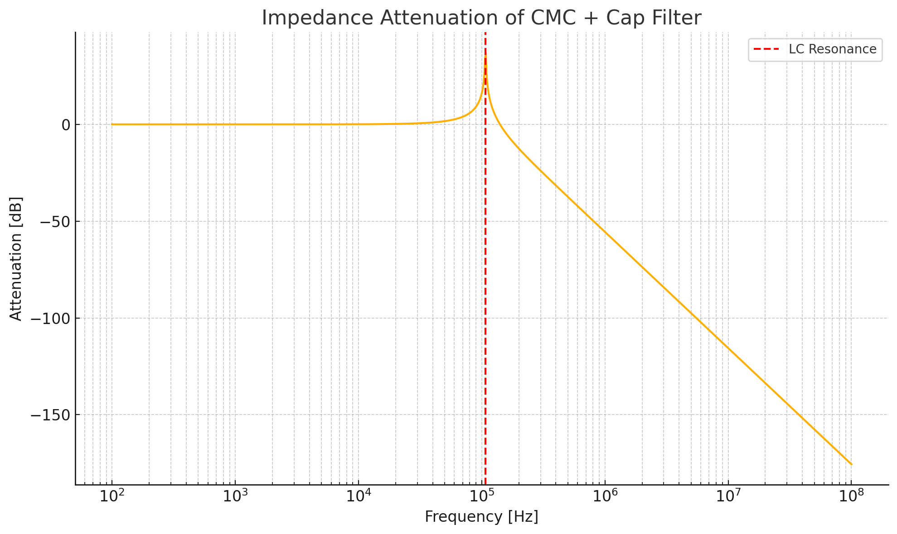

Analysis and Failure Mode
Each of the four onboard power regulators incorporate integrated protection features to ensure safe and reliable operation. These include short-circuit protection, thermal shutdown, and undervoltage lockout (UVLO), as detailed in the relevant section for each power domain below.
This section summarises the simulated and expected performance of each input protection element under worst-case load dump conditions. It also identifies their operating margins and expected failure modes.
Reverse Polarity Protection
The SS34 Schottky diode used on each power input provides low-loss polarity protection with a typical forward voltage drop of approximately 0.5 V. The diode is rated for 3.0 A continuous forward current and can tolerate surge currents up to 100 A for 8.3 ms. In reverse polarity scenarios, the diode blocks current flow with minimal leakage (~0.5 mA at 40 V) and recovers automatically when correct polarity is restored.
To verify its suitability for transient load dump conditions, a time-series simulation was performed using the worst-case ISO 7637-2 Pulse 5b profile. In this scenario, the diode was modelled conducting up to 88 A peak current with a decaying profile over approximately 43 ms. The simulated energy dissipation was approximately 2.66 J, resulting in a calculated peak junction temperature of ~146 °C assuming a thermal capacitance of 0.45 J/°C and 40 °C ambient. This remains below the device’s 175 °C absolute maximum junction temperature.
The results confirm that the SS34 operates within thermal and electrical ratings even during extreme surge events. While the diode is operating close to its limit, the simulated performance under these rare transients justifies its use in this design.
Transient Suppression (TVS Diode)
The SM8S36CA TVS diode is placed directly at the power input connector and clamps surge events to a maximum of approximately 58 V. Simulation of ISO 7637-2 Pulse 5b (150 V peak, 80 ms exponential decay) confirms that the diode absorbs approximately 19.3 J of energy. Assuming a thermal capacitance of 0.16 J/°C and ambient temperature of 40 °C, the peak junction temperature is estimated at 148 °C, below the diode’s 175 °C maximum.
The PCB pad temperature beneath the diode is expected to remain under 145 °C during this event, ensuring solder joint reliability and long-term device integrity. The TVS is well suited to clamp both positive and negative transients, with high energy handling and fast response time.
Simulation of the SM8S36CA response to an ISO 7637-2 Pulse 5b event — approximated as a 150 V exponential decay with a time constant of 80 ms — confirms that the diode clamps the downstream voltage to a maximum of 58 V throughout the transient. This provides over 40% margin relative to the 100 V absolute maximum of the surge stopper MOSFET and 65 V rating of the primary SMPS controller. The diode’s power absorption capability exceeds the energy of the test waveform, ensuring robust protection even during worst-case alternator disconnect or overvoltage conditions.

The simulated energy absorbed by the SM8S36CA during a worst-case ISO Pulse 5b event is approximately 16.7 J, well within the capabilities of this device. With a peak pulse power rating of 6600 W (10/1000 µs waveform), the diode offers ample headroom for marine surge events. This safety margin ensures long-term reliability even under repeated transient exposure.
Surge Stopper Circuit (MOSFET and BJT Controller)
The discrete surge stopper circuit incorporates an IRFR5410TR P-channel MOSFET and two PNP transistors. Under normal conditions, the MOSFET conducts to pass the filtered input voltage (V_FILTERED) to the internal supply rail (VSS). If the input exceeds the 18.5 V trip threshold, a comparator transistor activates and pulls the MOSFET gate up, turning it off rapidly.
Simulation confirms the gate voltage rises quickly through a 100 Ω gate resistor and snubber capacitor, suppressing the output to near-zero within microseconds. The snubber prevents voltage overshoot due to inductive switching and limits dV/dt across the MOSFET. A zener diode protects the gate from excess voltage.
The circuit also includes a current limiting function via a 0.68 Ω high-side shunt resistor and BJT current sense stage. If the current exceeds approximately 1.0 A, the transistor activates and disables the MOSFET. This provides robust protection against short circuits and overloads. The circuit recovers automatically once the fault is cleared.
A pull-down resistor ensures that the gate of the overcurrent sense transistor remains low when inactive, avoiding false triggering.
Simulation of a permanent short-circuit event at the output shows the MOSFET initially conducts a 10 A pulse for under 5 µs before limiting to 0.96 A. Peak power dissipation reaches ~67 W during the spike, but steady-state dissipation drops to ~13 W, with the MOSFET temperature stabilising at ~107 °C. This is within safe limits for the IRFR5410TR, which is rated for 40 W at 25 °C ambient.
Failure modes would require extreme conditions beyond ISO 7637-2 specifications, such as:
- surge voltages >180 V sustained for over 100 ms,
- prolonged clamping driving junction temperatures above 175 °C, or
- circuit faults preventing turn-off.
These scenarios are not expected under defined operating conditions. The combined protection elements (TVS, surge stopper, current limiter, and filtering) ensure robust operation under worst-case marine transients.
Time-series simulations were performed for Pulse 5b events with increasing peak voltages: 150 V, 175 V, 200 V, 225 V, and 250 V. Above 175 V, the TVS junction temperature exceeds 175 °C, indicating that protection is reliable up to this point, but operation beyond that is not guaranteed without risk of failure.
The input protection circuit offers high reliability and resilience to automotive and marine surge conditions. The MOSFET gate is controlled by fast-switching discrete logic, allowing precise and early cut-off. Combined with the high-energy TVS and integrated supply protections, the circuit reliably isolates and shields downstream components during all tested fault conditions.
Galvanic Isolation
The transformer-based isolated supply provides galvanic isolation between the NMEA 2000 CAN domain and the MDD400 digital electronics. Isolation is achieved using a 1:1 transformer with reinforced insulation, driven by a 410 kHz push-pull waveform from the SN6505B transformer driver. The transformer, Würth 760390012, is rated for 5000 Vrms isolation voltage (1 minute) and supports reinforced insulation per IEC 60950-1 and IEC 62368-1 standards.
On the PCB, the isolation boundary between the CAN and digital domains is implemented as a 6 mm wide keep-out zone, spanning all copper layers. This gap is further reinforced by a 5 mm wide solder mask clearance across the barrier. The combination exceeds minimum creepage and clearance requirements for working voltages up to 250 V in reinforced insulation systems, providing a high safety margin for typical marine electronics applications.
The PCB stack-up consists of four copper layers (signal, ground, power, signal) separated by FR4 dielectric layers totalling 1.483 mm of board thickness. There are no copper traces or vias bridging the isolation region on any layer, ensuring full dielectric separation. Components bridging the barrier (e.g. the transformer) have their pads located entirely on either side, with no copper overlap or mid-layer stitching.
This layout provides a high level of immunity to common-mode transients, surge events, and ground potential differences between the CAN backbone and internal logic. It also limits capacitive coupling across the barrier, which is important for minimizing EMI propagation. The transformer isolation has been verified in simulation and layout rule checks to ensure compliance with internal safety requirements and best practices for reinforced signal isolation.